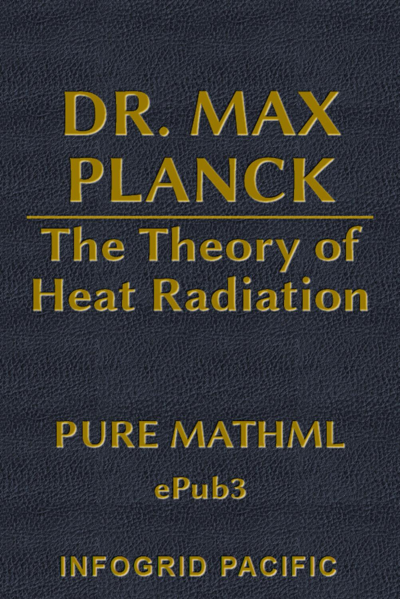

Table of Contents
Title Page
Copyright
Translator’s Preface
Preface to Second Edition
Preface to First Edition
Part II: Fundamental Facts and Definitions
Chapter I: General Introduction
Chapter II: Radiation at Thermodynamic Equilibrium. Kirchhoff’s Law. Black Radiation
Part II: Deductions From Electrodynamics And Thermodynamics
Chapter I: Maxwell’s Radiation Pressure
Chapter II: Stefan-Boltzmann Law of Radiation
Chapter III: Wien’s Displacement Law
Chapter IV: Radiation of Any Arbitrary Spectral Distribution of Energy. Entropy and Temperature of Monochromatic Radiation
Chapter V: Electrodynamical Processes in a Stationary Field of Radiation
Part III: Entropy and Probability
Chapter I: Fundamental Definitions and Laws. Hypothesis of Quanta
Chapter II: Ideal Monatomic Gases
Chapter III: Ideal Linear Oscillators
Chapter IV: Direct Calculation of the Entropy in The Case of Thermodynamic Equilibrium
Part IV: A System of Oscillators in a Stationary Field of Radiation
Chapter I: The Elementary Dynamical Law for The Vibrations of an Ideal Oscillator. Hypothesis of Emission of Quanta
Chapter II: Absorbed Energy
Chapter III: Emitted Energy. Stationary State
Chapter IV: The Law of the Normal Distribution Of Energy. Elementary Quanta Of Matter and Electricity
Part V: Irreversible Radiation Processes
Chapter I: Fields of Radiation in General
Chapter II: One Oscillator in the Field of Radiation
Chapter III: A System of Oscillators
Chapter IV: Conservation of Energy and Increase Of Entropy. Conclusion
Author’s Bibliography
Appendix I
Appendix II
Landmarks
Begin Reading
Table of Contents
Copyright Page
Part I. Fundamental Facts and Definitions
Part II. Deductions From Electrodynamics And Thermodynamics
Part III. Entropy and Probability
Part IV. A System of Oscillators in a Stationary Field of Radiation
Part V. Irreversible Radiation Processes